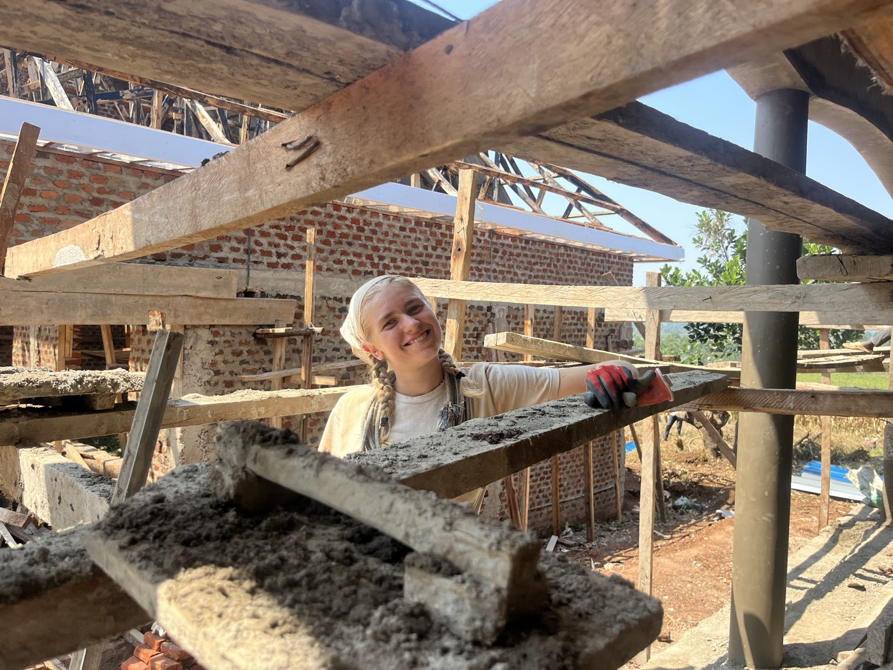
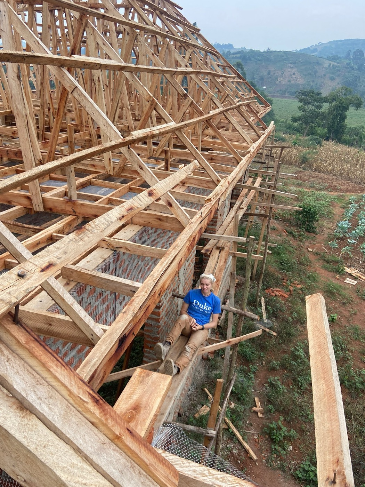

In Country Project Manager
Rural School Construction — Kaihura, Uganda



As In Country Project Manager, I led an 11-student team to complete an 8-week rural school construction project in Kaihura, Uganda — managing daily operations, coordinating material logistics, and communicating closely with local laborers to keep the build aligned with design specifications, schedule goals, and safety protocols.
Working in a remote, resource-constrained setting meant adapting constantly: I adjusted construction plans to overcome material shortages and delays while still holding the line on project specs and community needs.
Through agile leadership, team coordination, and on-site problem-solving, we delivered the school's structural components on time and under budget — an early lesson in what it takes to get real infrastructure built when nothing goes exactly to plan.